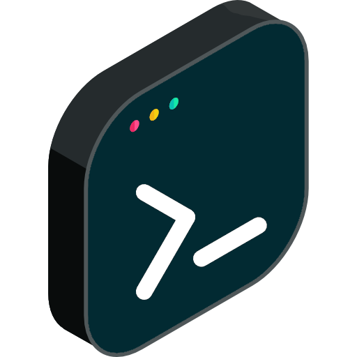

<!-- index.html -->

<!DOCTYPE html>
<html>
  <head>
    <meta http-equiv="X-UA-Compatible" content="IE=edge,chrome=1" />
    <meta name="viewport" content="width=device-width,initial-scale=1" />
    <meta charset="UTF-8" />
    <!-- <link
      rel="stylesheet"
      href="//cdn.jsdelivr.net/npm/docsify@4/themes/vue.css"
      /> -->


      <!-- docsify-themeable styles-->
      <!-- PrismJS for code highlighting -->
      <link rel="stylesheet" href="path/to/prismjs-theme.css">
      <link 
      rel="stylesheet"
      href="//cdn.jsdelivr.net/npm/docsify-darklight-theme@latest/dist/style.min.css"
      title="docsify-darklight-theme"
      type="text/css"
      />

      <!-- changelog -->
      <link
      rel="stylesheet"
      href="//cdn.jsdelivr.net/npm/docsify-changelog-plugin@latest/dist/style.css"
      />
      <link
      rel="stylesheet"
      href="//maxcdn.bootstrapcdn.com/font-awesome/4.5.0/css/font-awesome.min.css"
      />
  </head>
  <body>
    <nav></nav>
    <div id="app"></div>
    <script>
      window.$docsify = {
        name: '<span style="vertical-align: middle;">kandodev</span>',
        homepage: 'index.md',
        loadSidebar: true,
        mergeNavbar: true, // merges navbar and sidebar on small screens
        loadNavbar: false,
        relativePath: true,
        autoheader: true,
        changelog : 'CHANGELOG.md' // path of your changelog, it can be remote as well
        //...
      };
    </script>
    <script src="//cdn.jsdelivr.net/npm/docsify@4"></script>
    <!--<script src="https://cdn.jsdelivr.net/npm/docsify-themeable@0/dist/js/docsify-themeable.min.js"></script>-->
    <script src="https://cdn.jsdelivr.net/npm/docsify@4/lib/plugins/zoom-image.min.js"></script>
    <script src="//cdn.jsdelivr.net/npm/docsify-copy-code/dist/docsify-copy-code.min.js"></script>
    <script 
      src="//cdn.jsdelivr.net/npm/docsify-darklight-theme@latest/dist/index.min.js"
    type="text/javascript">
    </script>
    <script src="https://cdn.jsdelivr.net/npm/docsify-changelog-plugin@latest/dist/index.js"></script>
  </body>
</html>
